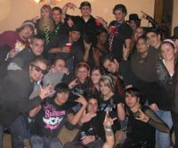

Fiesta de peluts
 De: La Frikipedia, la enciclopedia extremadamente seria.
De: La Frikipedia, la enciclopedia extremadamente seria.

|
Este artículo necesita ser ilustrado. Busca una afoto en nuestro depósito de imágenes o donde sea y ponla, pero que no sea pr0n, que se cabrea el señor del adSense y nos corta el grifo de los dólare. Y sin dólare no hay servidor...
|
| De la serie fenómenos sociológicos:
|
| Fiesta de peluts
|
| 
|
| Lo máximo a lo que se puede aspirar
|
|
| Fenómeno sociológico
|
'Peludae Pedum Congregatio'
|
| Principios
|
El pedo por el pedo
|
| Zona de origen
|
Raccoon City
|
| Consecuencias
|
Volver a casa a pata
|
| Símbolos típicos
|
Estrellas de cinco puntas y calaveras
|
| Frikismo
|
Más bien satanismo
|
| ¿Gusta a la gente normal?
|
Cómo decirlo sin ofender a nadie... NO!
|
| ¿Recomendable?
|
¡Faltaría más!
|
| Máximo exponente
|
La Fiesta en Sí
|
¿De dónde viene este ancestral y maléfico rito?
Los peluts son seres generalmente inadaptados a la sociedad, que visten de color negro por lo general, aunque se admite la variante de combinar dicho color con el rosa. Es el nombre que reciben en el levante español los Emo. Por costumbre esta especie suele llevar colgando, pegado a la ropa o tatuado una amplia gama de calaveras huesudas por doquier. Los peluts como buenos inadaptados, no suelen divertirse yendo al cine a ver el último estreno de la cartelera ni a jugar partidos de básquet con los de su especie, sinó que celebran estos ritos satánicos donde abunda el calor y la música que su amado televisor les dice que es buena. Esto es: fiestas de peluts.
Desarrollo espiritual del pelut durante la ceremonia
En estas fiestas sacan lo mejor de si mismos y su inteligencia y conocimiento espiritual se desarrollan por momentos a velocidad indomable en cualquiera de las materias siguientes, que son a saber y a saber cuáles:
- Química: Durante la celebración, un pelut puede descubrir en menos de 20 minutos que una botella de cualquier bebida alcohólica es inflamable, arrojando el líquido encima de una hoguera de medio metro de altura, seguido de un clamoroso “Oooh…” por parte de los asistentes. Así descubrieron los peluts a alimentar el fuego. Nada de ramas secas, solo alcohol.
- Geometría: Los peluts parecen poseer un amplio sentido geométrico y estratégico del orden que sólo superan los patos cuando migran al norte y las sardinas de Buscando a Nemo. Forman círculos perfectos cuando se sientan bien en la playa o en cualquier otra superficie sólida (no valen líquidas ni gaseosas, pues los peluts aún no han aprendido a levitar, aunque tiempo al tiempo, en cada fiesta se desarrollan más, son como el virus de la gripe en este sentido. Mutan, por decirlo de alguna manera).
- Fotografía: Un pelut, en una fiesta de los de su especie es capaz de hecharse la misma foto con la misma persona en el mismo lugar y a la misma hora dándose un beso, mordiéndose el cuello o simulando que son muy, pero que muy amigos sacando la lengua en plan “soy guai”. Aclarar que las fotos han de hacerse a oscuras, forzando a más no poder el flash de la cámara. Si la foto ha de tomarse de día (muy raro ya que los peluts son seres nocturnos), las fotos procederán a tomarse enfocando el objetivo en la misma dirección hacia donde esté el sol. Por supuesto, para que una foto sea legítima, al menos el 50% de los peluts que aparezcan en la foto han de mostrar la lengua.
- Historia: Durante el gran evento, los peluts van a citar y enumerar todos los acontecimientos históricos que llevaron a su gran enemigo y Leviatán (España) a la más mísera ruína. Hechos como una Dictadura, eliminación en cuartos de un Mundial de Fútbol, etc. Por supuesto, nunca oirás hablar a estos seres de la victoria de la selección Española en la Eurocopa ’08, pues ello acarrea el riesgo de ser expulsado antes de tiempo de la fiesta de peluts y ser reinsertado en la sociedad como uno más, abandonando así el estado civil-pelut de “marginado”(¿Quién quiere eso?).
- Educación Física: Estos homínidos oscuretes adquieren un increíble equilibrio en estas congregaciones, llegando a ser capaces de hacer malabares con diábolos, cadenas o simplemente practicando la afición por excelencia de cualquier pelut: el skate. (Nota del Autor: Esta última habilidad no puede ser desarrollada en las playas, salvo que la fiesta se celebre dónde los Rocket Power).
¿Qué hacer para integrarte bien en una fiesta de peluts?
- Hablar mal de España
- Hablar muy mal de España
- Hablar extemadamente mal de España
- Dejar muy claro que tú eres Republicano y que sientes la misma atracción por la corona que Catwoman por darse un chapuzón en una piscina.
- Comentar que te acabas de bajar la última discografía de Alex Ubago, y que ésta es para “flipar”. (Nota del Autor: si observas que la mayoría de los asistentes ponen caras raras o que sospechan que no eres un inadaptado-pelut, corrígete diciendo que se bajó por error y que te estabas bajando la discografía completa de Extremoduro o System Of A Down, y que éstas si que son para “flipar”. En el extremo caso de que esto no les convenza y te estés viendo el próximo fin de semana acudiendo al cine o hechando una pachanga futbolera con nuevos amigos normales, hecha mano del comodín y realiza los puntos 1, 2 o 3. Ya está, vuelves a ser uno de ellos.).
- Los peluts cuando están en casa si no están cortándose las venas, adorando algún Dios babilónico-luciferino o sacrificando niñas en un altar ante una estatua de un búho, echan mano del mando a distancia y buscan incansablemente por las cadenas analógicas las emisoras locales donde se saben que van a encontrar sus gustos musicales. Horas de diversión, hasta que llegue la noche.
- Como estos inadaptados se “cagan” en la sociedad, no compran placas de hielo, o simplemente hielo, por lo cual el botellón estará muy caliente. No se te ocurra hacer un comentario tipo: “Joder, que mierda es esto…” o “Joder, podríais haber comprado puto hielo…”, podrías estar fuera del mundo pelut en menos que canta un gallo.
- Una gran demostración de que eres uno de ellos es bañarte en la playa con los pantalones vaqueros puestos, sin nada más, solo con vaqueros. Esta modalidad sólo es apta para fiestas de peluts en la playa.
- Debes llevar mínimo una rasta en la cabeza, preferiblemente no-postiza y con microorganismos que habiten en ella.
- Declarar públicamente más de 3 veces que a ti te gustan '"mucho"' los grupos locales de música. Si tu Comunidad Autónoma tiene el privilegio de poseer un registro lingüístico propio diferente al Castellano, los grupos locales que mas han de gustarte son los que tengan su nombre en dicho registro lingüístico. Ej: “Orchata fartonera” , sería un grupo Valenciano, “Caldo de Callos” sería un grupo Madrileño (Es bien conocido que en Madrid no se habla castellano, sino Madrileño de Fuenlabrada), o “Pamtumaka” un grupo Catalán. Lo dicho: estos grupos te encantan.
- Por último, puesto que la playa queda lejos y comprarte un coche seria de persona normal, los peluts vuelven a su casa haciendo autostop. Como imaginaréis, nadie subirá a un pelut mojdado en agua salada de arriba abajo, oliendo a alcohol caliente con una amplia gama calaverística por todo el cuerpo/ropa. Por ello, te espera lo mas duro, que será volver a pata a casa con un pulgar apuntando al cielo.
Despues de asistir a una fiesta de peluts
Después de asistir a una fiesta de peluts, puedes morir tranquilo. Has llegado a la cúspide del divertimiento humano. Insuperable. Has alcanzado el punto de inflexión de tu vida: ahora ya NADA será como antes. A continuación siguen los efectos siguientes a la culminación del acto.
- Da igual que quedes con tu modelo preferida en un hotel de 5 estrellas con gastos pagados, o simplemente con el actor/ actriz mas famoso/ a de Hollywood. Tú ya has alcanzado el punto álgido de tu vida, tú ya has asistido a una fiesta de peluts, y por tanto esta humilde cita te será tan emocionante como pelar un cacahuete pocho.
- De igual modo, si algun día Elsa Pataky o Pilar Rubio quieren tener una cita contigo, sacarás la excusa de que tienes que hacer una fiesta de peluts.
- No importa que te inviten a correr en un monoplaza de F1, a conocer a tu estrella de deporte favorita: tú ese día tienes una importante fiesta de peluts que difícilmente rechazarás, y seguramente le des plantón a Kobe Bryant o a M. Schummacher, porque tú ese día estás asistiendo al acontecimiento mas divertido que existe en este planeta: una fiesta de peluts.
- Cuando te toque la lotería, irás a cambiar el boleto por asistir a una fiesta de peluts.
- Sólo hay una cosa más divertida que asistir a una fiesta de peluts, pero como nadie puede contarla después de haberla realizado, la fiesta de peluts sigue estando en primer lugar: esta cosa es ver recibir una patada de Chuck Norris en el abdomen a un pelut.
- Tus sueños nunca mas se harán realidad, o si se hacen realidad no los disfrutarás tanto como antes de haber asistido a una fiesta de peluts.
Acontecimientos que hacen que la fiesta de peluts no sea divertida (cosa rara)
1.- Tener planeado que la fiesta sea en el lugar “X”, y llegar a dicho lugar y que éste esté habitado por una fiesta mucho mayor, mejor planeada y con más gente. Después de esto probablemente tengas ganas de irte a casa a golpearte la cabeza por no haber asistido a tu cita con Kobe o Pilar Rubio.
2.- Llegar a la fiesta con ganas de montar un gran “pollo”, y te lleves la desagradable sorpresa de que el botellón tenga la misma temperatura que una meada de paquidermo (Nota del Autor: seguir la recomendación nº 7 del capítulo de integración. “¿Qué hacer para integrarte bien en una fiesta de peluts?” para asegurarte no salir mal parado del gran chasco)
3.- Arrastrando los dos puntos anteriores, y ya muerto de aburrimiento y pensando en que estará haciendo Elsa, Pilar, Kobe o el monoplaza de F1, te fijas en que un integrante de la fiesta se lleva las manos a la cabeza. Piensas “esto no pude ir a peor”, pero para colmo, puede. Después de la pregunta típica “¿Qué pasa?”, se te acerca uno de ellos y te dice que la batería es incompatible con la minicadena…Ahora sí, piensas que esto va a ser todo un “fiestón”.
Autor(es):
- Azulejos
- Diegocon13
- C3RV4NTE5
- Kirby
- Evidence nobbe
- Likan003
Frikipedia 2005-2016, Licencia
GFDL 1.2 - Extraído por FrikiLeaks